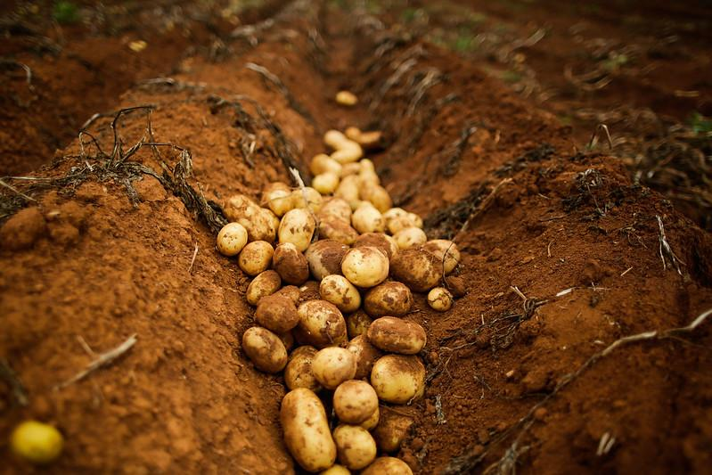

Em uma situação de crise econômica, guerra ou instabilidade, a melhor maneira de se manter em conta, é sobrevivendo por meios alternativos, e cultivando suprimentos necessários para sua sobrevivência. E nisso se releva a importância do plantio de hortaliças para quem quer ter um meio seguro de alimentação. Com esta idéia em mente, esta categoria vai cubrir os Tubérculos, suas vantagens, quais tipos, como plantar e seu valor alimentício.
Tubérculos ou hortaliças tuberosas são aquelas cujas partes utilizáveis desenvolvem-se dentro do solo. Os tubérculos fazem parte de um grupo de alimentos que possui raízes grossas e subterrâneas, na natureza, eles são basicamente o órgão de reserva de água e energia.
Os tubérculos se desenvolvem melhor quando há incidência direta do sol e em regiões com temperaturas amenas.
Muitas pessoas podem pensar que é necessário dispor de um grande espaço para investir nesses vegetais, mas é possível plantar tubérculos em terreno pequeno de maneira fácil e prática.
Você pode plantar em vasos ou em quintais pequenos, mas o solo deve ter, no mínimo, 40 cm de profundidade e também deve ser bem descompactado, com muitas minhocas, para as raízes se desenvolverem com facilidade.
Dentre os vários tipos de tubérculos se destacam a batata, a cenoura, a beterraba e o inhame como os mais comuns.
Este artigo vai cobrir os respectivos plantios e métodos de cultivação abaixo:
Para cultivar a Batata o ideal é plantá-la entre janeiro e abril, em locais secos, e entre maio e junho, em temperaturas baixas.
Respeite um espaçamento de 30 cm a 40 cm entre as covas de plantio.
O plantio da cenoura é feito com a semeção direta no solo.
As sementes são distribuídas uniformemente, e em linha contínua nos sulcos com 1,0 a 2,0 cm de profundidade e distanciados de 20 cm entre si.
A distribuição das sementes pode ser feita manualmente ou com o emprego de semeadeira manual ou mecânica.
O cultivo pode-se dar em sistema de semeadura direta e plantio por mudas. As mudas podem ser semeadas em tubetes ou sementeiras, o que ajuda a evitar a contaminação da semente.
A beterraba possui glomérulos que contém cada um, 3 a 4 sementes. Para o plantio direto, recomendo colocar as sementes em água durante 12 horas e em seguida lavar em água corrente, deixando secar a sombra.
O plantio direto pode ser por semeadura em canteiros definitivos com 30 cm de altura e 0,9 metros de largura. Faça sulcos de 30cm e com 2cm de profundidade, colocando uma semente a cada 5 cm ou caso deseje, você pode cultivar beterraba em vasos.
No plantio, as mudas devem ser distribuídas ao longo da leira ou do sulco, colocando-se a parte cortada virada para baixo.
Após a distribuição, as mudas devem ser cobertas com uma camada de 5 centímetros de terra. O espaçamento entre linhas e entre plantas depende da forma de condução da lavoura, da fertilidade e do tipo de solo.
Se o solo for fértil e a umidade alta, recomenda-se a utilização de espaçamentos mais apertados, para evitar que as raízes cresçam muito.
Sem contar que as hortaliças-tuberosas são sustantes em fonte de carboidratos, contém proteínas, baixíssimo conteúdo de lipídeos: